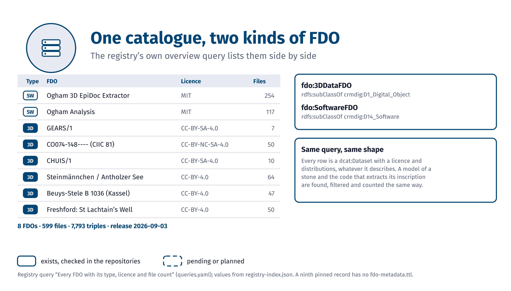

Federated knowledge graph ecosystem
Finished 3D and software FDOs in the registry and the N4O collection.
Draft, as of 2026-11-05. These graphics are drafts for the ArcheoFOSS 2026 talk. Dashed outlines mark what is planned, solid outlines what exists.
Draft, as of 2026-11-05

FE.1From packaged FDOs to the federated KG: 3D models and software take the same road.
FDOx-squirrel, fdox-visuals (Florian Thiery, LEIZA). Code: MIT licence. Data: FDOx registry 253aee9 (release 2026-09-03); N4O collection 882a5f7 (2026-09-04).

Draft, as of 2026-11-05

FE.2One catalogue, two kinds of FDO: the registry’s overview query lists 3D data and software side by side.
FDOx-squirrel, fdox-visuals (Florian Thiery, LEIZA). Code: MIT licence. Data: FDOx registry 253aee9 (release 2026-09-03); N4O collection 882a5f7 (2026-09-04).